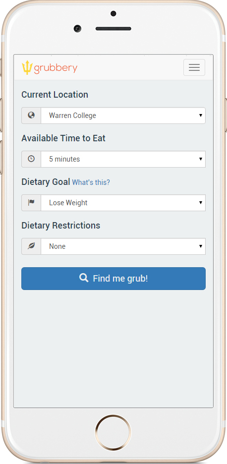
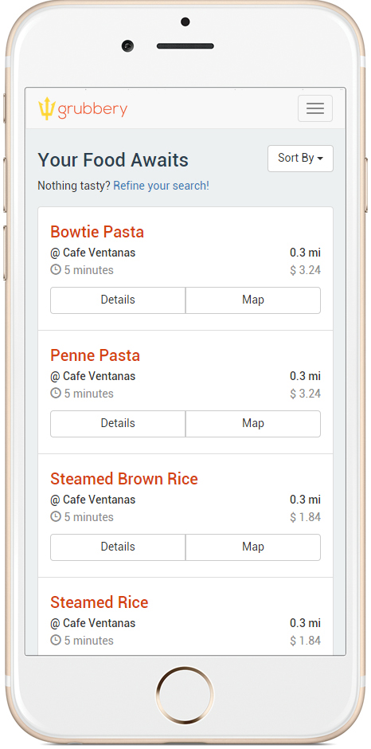
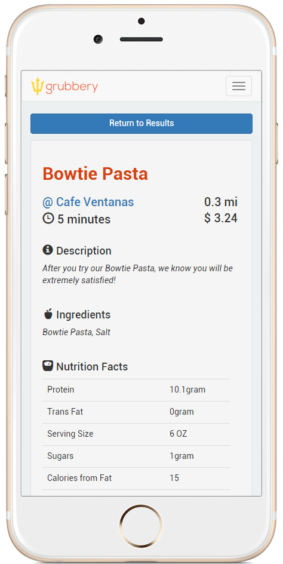
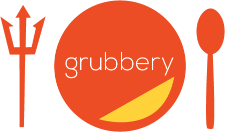

Grubbery: A mobile web application
Date: Winter 2015
Grubbery is a mobile web app for UC San Diego students looking for cheap, healthy, and quick food close to their location.
I worked on this project with two other people as part of an Intro to HCI class at UC San Diego. We went from the beginning of finding user needs and testing low/high fidelity prototypes to the end product. I worked on the user profile page, the search page, the Map display page, and the Meal Details page. I also created the logo for our application using Adobe Illustrator. In the process, I became familiar with using node.js, express, HTML/CSS, and Javascript.




Students with busy schedules often end up eating poorly throughout their days. There should be an easy way to maintain your dietary goals on campus. Grubbery helps you find food that fits your time constraints and your nutritional goals. We’ve classified meals into a number of categories. Let's say you're a vegan looking to gain lean muscle. You’re in ERC, you’re hungry, and you’ve got 10 minutes until class. Grubbery can find you a perfect meal.
Check it out here!